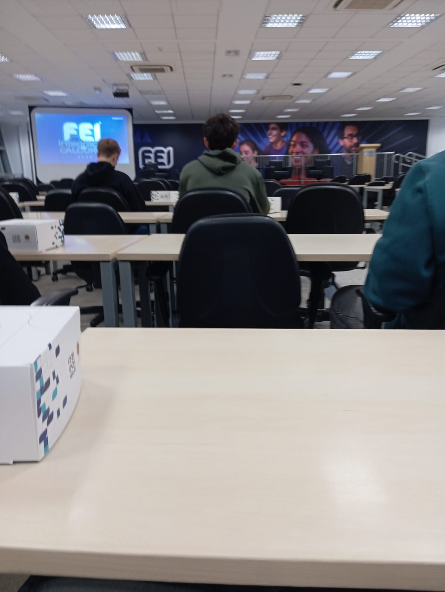
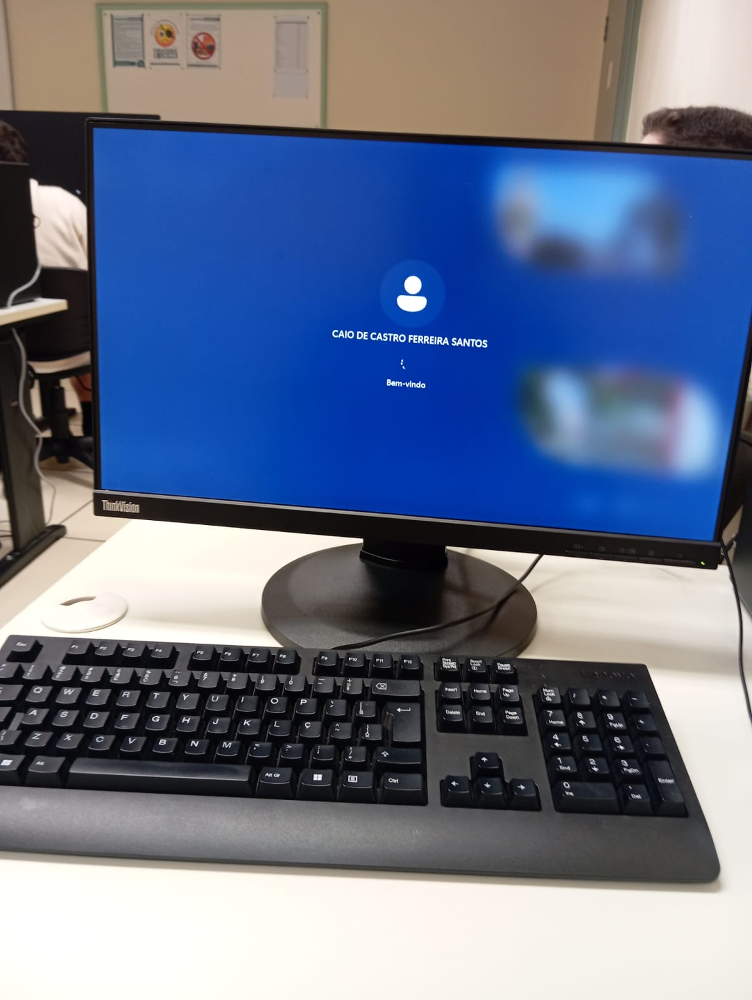
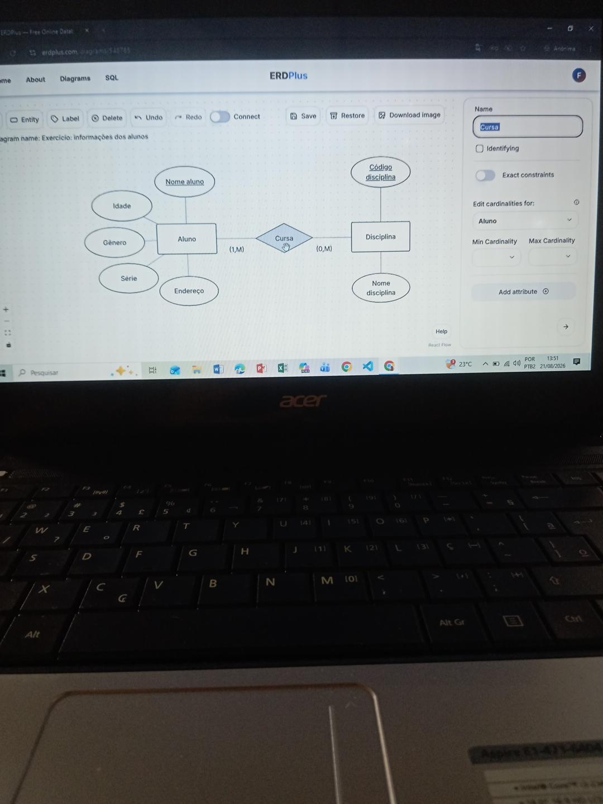
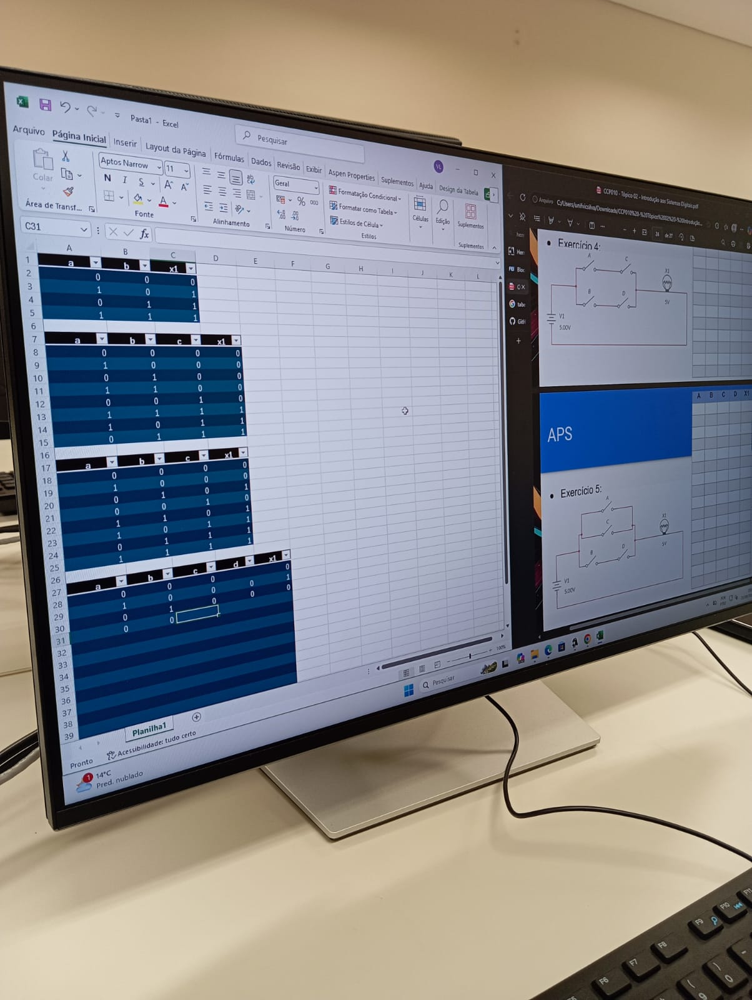
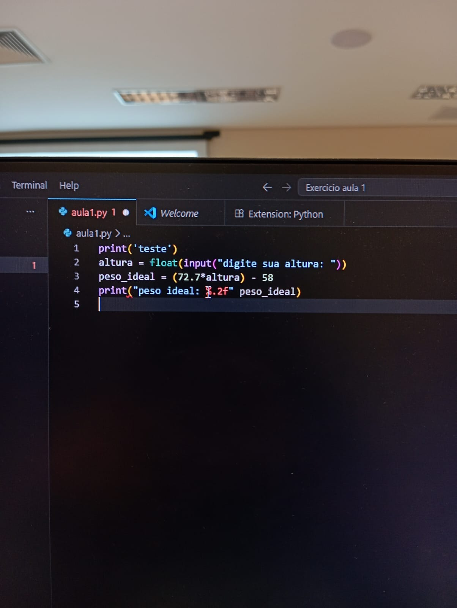

Meu nome é Caio, tenho 21 anos e sou estudante de Ciência da Computação na FEI. Estou cursando o primeiro ciclo da graduação e, atualmente, estou me dedicando a aprender as bases da programação, pois sei que esse conhecimento fará muita diferença para o meu desenvolvimento profissional e para futuras oportunidades de estágio.
Eu escolhi a área de tecnologia por ser algo que sempre achei interessante e desafiador. O que mais me chama a atenção é a possibilidade de criar soluções inovadoras, desenvolver automações para agilizar processos e melhorar a eficiência. Quero continuar adquirindo conhecimento e, no futuro, aplicar o que estou aprendendo em projetos e oportunidades profissionais..




